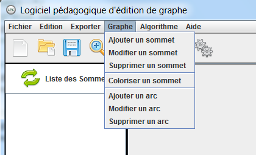

Les composants
Menu des composants
 Il y a plusieurs moyen d'accéder au menu des composants:
- Cliquer sur Graphe
- Faire un clique droit sur la fenêtre contenant le graphe
- Faire un clique droit sur la liste des composants
Ajout d'un composant: Sommet
| Accéder au menu et cliquer sur ajouter un sommet. La fenêtre d'ajout s'ouvre. Entrer le nom du sommet et cliquer sur valider. Le sommet s'ajoute dans le coin suppérieur gauche de la fenêtre. |
Ajout d'un composant: Arc
| Accéder au menu et cliquer sur ajouter un arc. La fenêtre d'ajout s'ouvre. Selectionner le sommet de départ et le sommet d'arrivée de l'arc. S'il s'agit d'un graphe non orienté, l'ordre n'a pas d'importance. S'il s'agit d'un graphe valué, entrer la valeur de l'arc. S'il est non valué, la saisie du texte est grisée. |
Modification d'un composant: Sommet
| Cliquer sur le sommet à modifier, accéder au menu et cliquer sur modifier un sommet. Entrer le nouveau nom du sommet et cliquer sur ok. |
Modification d'un composant: Arc
| Accéder au menu et cliquer sur modifier un arc. Selectionner le premier sommet puis le deuxième sommet et entrer la nouvelle valeur de l'arc. |
Suppression d'un composant: Sommet
 |
Cliquer sur le sommet à supprimer. Accéder au menu et cliquer sur supprimer un sommet. La suppression se fait automatiquement. |
Suppression d'un composant: Arc
| Accéder au menu et cliquer sur supprimer un arc. Entrer les sommets de l'arc et cliquer sur valider. |